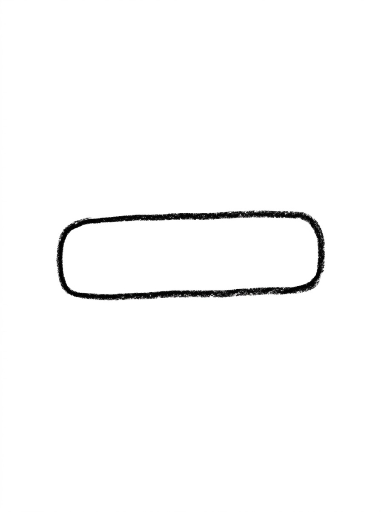
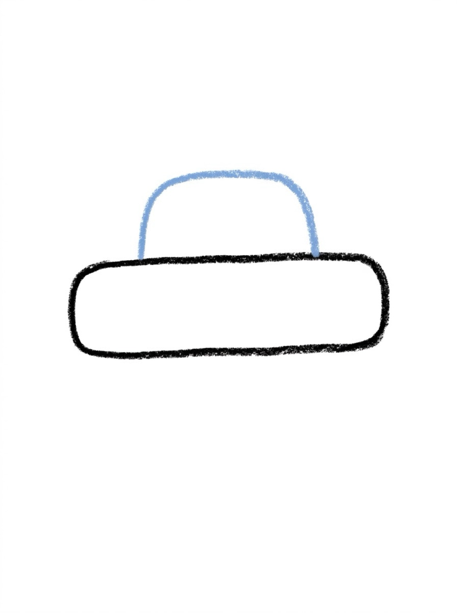
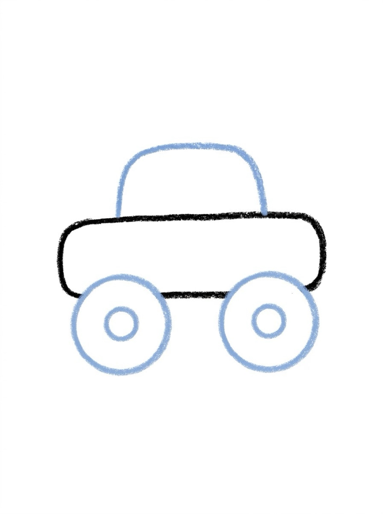
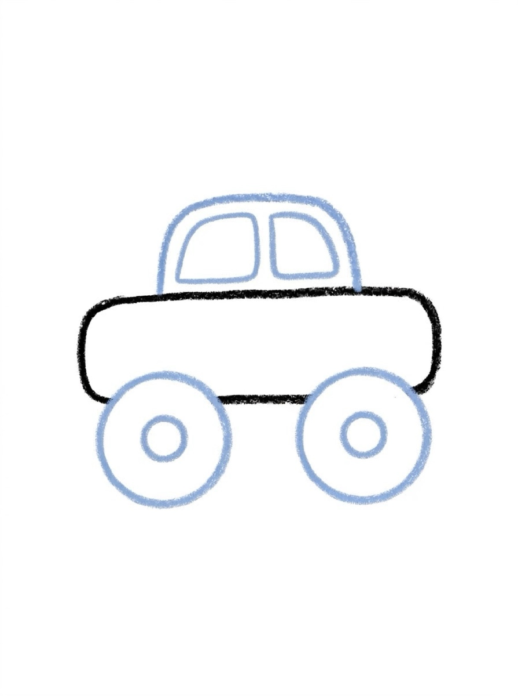
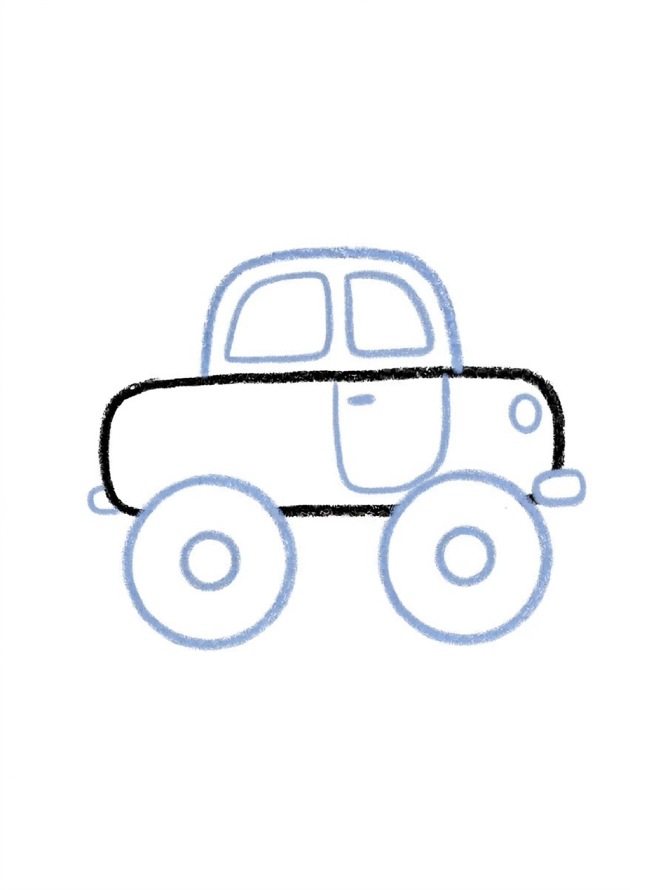
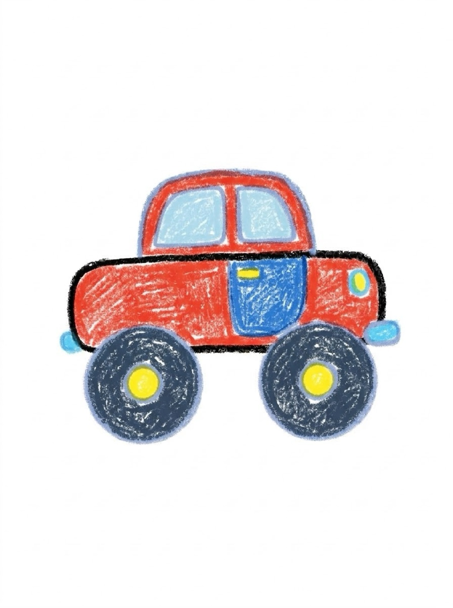

Car Drawing for Kids How to Draw a Car in 6 Easy Steps
Quick Answer
This free step-by-step tutorial shows kids how to draw a car in six easy steps: a rectangle body, a roof, round wheels, windows, doors and details, and color. Download the printable PDF, grab crayons, and follow along together. Made for ages 4 and up — no signup needed, just print and draw. It is an easy car drawing built from two shapes — rectangles and circles, boxes with wheels.
At a Glance
- Subject: How to draw a car
- Ages: 3+
- Steps: 6 steps
- Time: ~10 min
- Difficulty: Easy
- Supplies: Paper, crayons
Cars are just boxes with circles — which makes them one of the most satisfying things for kids to draw. Two minutes of rectangles and your little one has a vehicle they'd proudly park on the fridge.
✏️ How to Draw a Car: Step by Step
One step per box — draw each new part in a different color so kids can see exactly what changed.
Step 1: The Body

Draw a long rounded rectangle lying sideways. This is the car's body.
Step 2: The Roof

Draw a smaller rounded shape on top of the body for the roof and cabin.
Step 3: The Wheels

Draw two big circles under the body for wheels, with smaller circles inside for hubcaps.
Step 4: The Windows

Draw two window shapes inside the roof — a windshield and a side window.
Step 5: Doors and Details

Add a door line, a small handle, headlights in front, and a bumper.
Step 6: Color It In

Color your car any color you like — race-car red, police-car blue, or rainbow!
📊 Car Drawing by Age
Every age can join in — just adjust the job.
| Age | What they can do | Tip |
|---|---|---|
| 3–4 | Trace the body and wheels on the printable | Use a cup to trace perfect wheel circles for them |
| 4–5 | Draw the body, roof, and wheels with help | Rulers help with the body — or embrace wobbly lines |
| 6+ | Draw the whole car solo | Challenge: draw a traffic jam of five different cars |
🖨️ Download Your Free Car Drawing Printable
The printable lays out all 6 steps one per box, big enough for little hands — kids draw right alongside each step.
⬇️ Open Free Printable 🖨️ Print🎁 Free printable for ages 3+
🚗 Driveway Parade
Draw three cars in a row — a family car, a race car, and a silly car (give it eyes on the windshield). Line them up like a parade and vote on which one wins the race. Same six steps, three totally different personalities.
🚗 Cars in the Real World
An easy car drawing is a good excuse to look at real cars first. The first cars, a little over a century ago, were basically horse carriages with engines — drivers sat up high, cranked the motor by hand to start it, and tootled along slower than a bicycle races today. Modern cars are rolling computers by comparison, but the family resemblance holds: four wheels, seats inside, windows all around, and a shape built to slip through the air.
Ask your child what kind of car theirs is while they draw: a racer, a family car with a dog in the back, a pickup with a job to do? Cars are the most-seen machine in a child's life, which is exactly why this is such a satisfying first vehicle to draw — the reference model drives past every day. The garage fills up fast: add how to draw a train for the long trips and how to draw a robot as the mechanic.
What You'll Need to Draw a Car
You'll need a black crayon or marker for the body outline, plus whatever colors your kid wants for the paint job — red and blue are the classics. A ruler helps for the straight body lines if they're struggling, but freehand is fine too. Stick to plain white paper; the car's rectangular shapes need clean edges to read well.
What They're Learning
Cars are all about rectangles and circles working together — the body, the windows, the wheels. Getting the wheels round (instead of wobbly) is genuinely tricky and great circle practice. Placing two wheels evenly spaced also sneaks in early ideas about symmetry and balance without any math talk.
Make It Yours
One easy car drawing is rarely the end — the upgrades are the fun. After the basic car, try a race car with a spoiler and racing stripes, or a silly monster truck with giant wheels. Kids love drawing a road under the car, adding clouds and a sun in the sky, or putting their family members as stick figures in the windows. A whole traffic jam of different colored cars makes a great fridge display.
🛒 Our Favorite Drawing Supplies
These are the supplies we reach for in our own home — washable (because kids), quality paper, and enough colors to avoid fights.
As an Amazon Associate, MomYouNeedThis earns from qualifying purchases — at no extra cost to you.
❓ Car Drawing FAQs
What is the easiest way for a kid to draw a car?
Draw a long rounded rectangle for the body, a smaller bump on top for the roof, and two circles underneath for wheels. Add windows, a door line, and headlights. It's all rectangles and circles — the two easiest shapes there are.
What age can kids start learning to draw a car?
Most kids can manage the rectangle body and circle wheels around age 4 with help, and draw a full car solo by 5 or 6. Younger kids can trace the shapes on the printable.
What supplies do we need to draw a car?
Paper and crayons or markers — plus an optional ruler for straight body lines. The free printable PDF lays out all six steps one per box so kids can draw right alongside each step.
Is the car drawing printable really free?
Yes — every printable on MomYouNeedThis is 100% free to download and print. No signup, no payment, just tap the download button.
Where can I find an easy car drawing for kids?
Right here — the six steps are on this page, and the printable PDF version is free to download below, no signup needed. When your child is ready for a second vehicle, the train tutorial is the natural next stop.
How do I print the car drawing tutorial?
Open the PDF and print at 100% scale (not 'fit to page') so the drawing boxes stay big enough for little hands. The printable is designed to stay large — never shrunk to force a fit.
How does a drawing car step by step tutorial work?
Each of the six pictures shows the car so far, with the newest part drawn in a fresh color. Your child copies just the colored part, compares it with the picture, and drives on to the next step.
📚 Keep Exploring
- ✏️ All 76 Drawing Tutorials 76 free step-by-step drawing tutorials for kids.
- 🐾 Animal Coloring Free printable animal coloring pages for little learners.
- ✏️ Drawing Practice Free printable drawing pre-writing worksheet for toddlers.